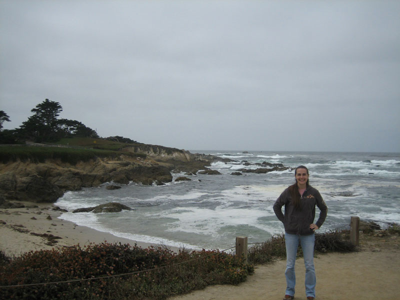

| click here to return to the thumbnails |
|  |
| After leaving the Aquarium we went through town to the "17 mile drive" which runs along Pebble Beach Golf Course. You have to pay $10 to enter which is a bit of a rip-off (especially on a cloudy day), but I think it is in place to help keep traffic down or something. Fortunately we knew someone who knew someone and could use the line that we were visiting them to dodge the $10 fee. That was nice because it is a pretty drive and was neat to see some of the jumbo sized homes built along the golf course. |